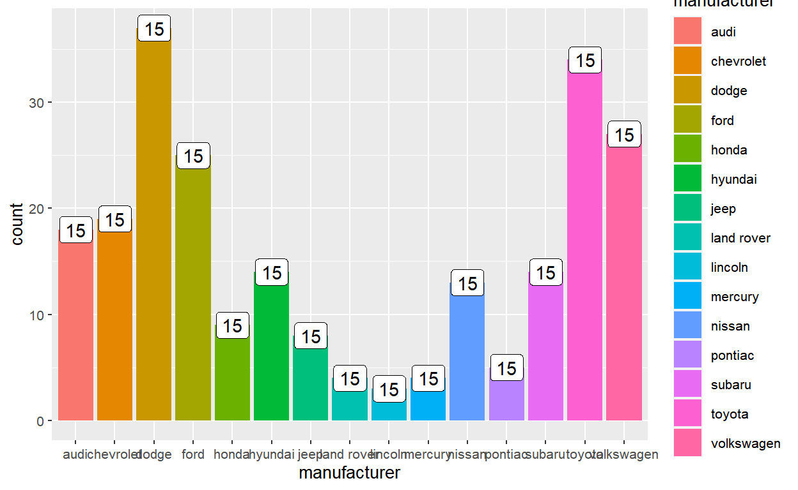
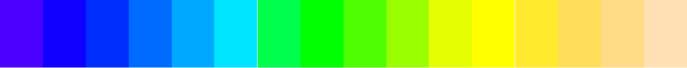
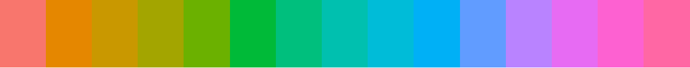
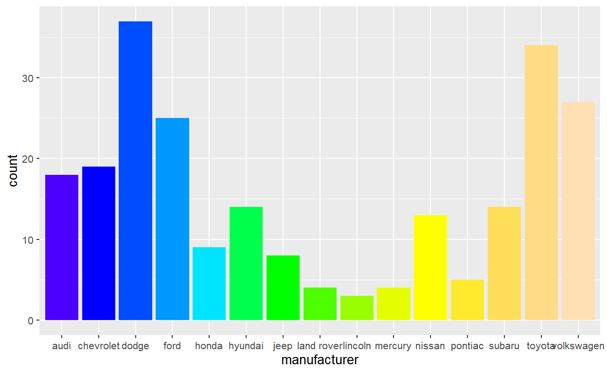
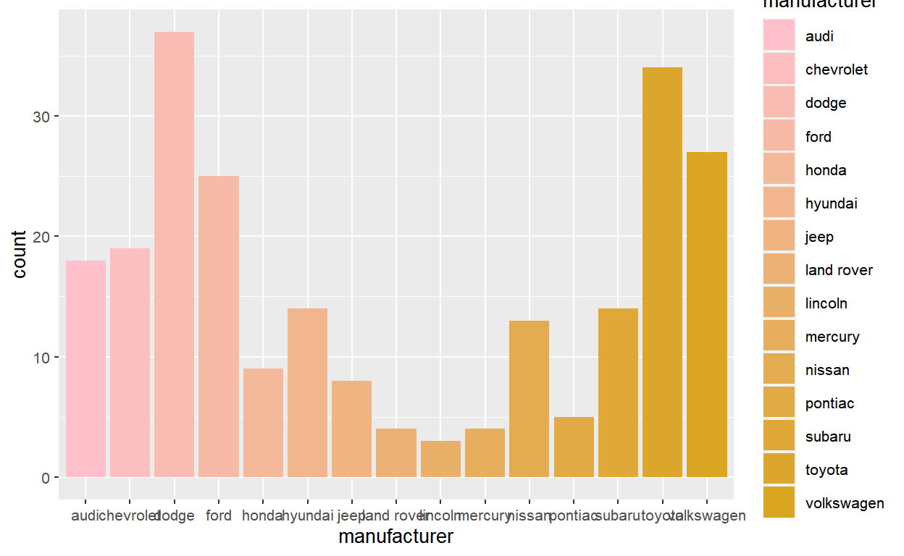
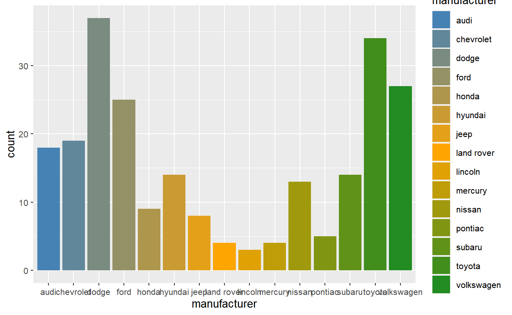
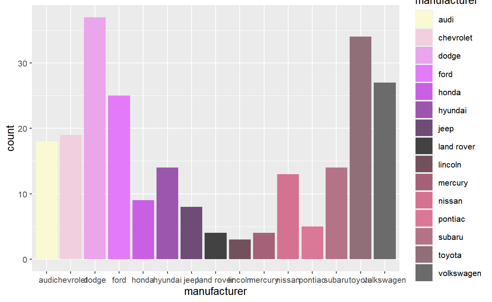

Fumbling my way through an XY problem
June Choe ![]()
Intro
A few months ago, over at the R4DS slack (http://r4ds.io/join), someone posted a ggplot question that was within my area of “expertise”. I got tagged in the thread, I went in, and it took me 3 tries to arrive at the correct solution that the poster was asking for.
The embarrassing part of the exchange was that I would write one solution, think about what I wrote for a bit, and then write a different solution after realizing that I had misunderstood the intent of the original question. In other words, I was consistently missing the point.
This is a microcosm of a bigger problem of mine that I’ve been noticing lately, as my role in the R community has shifted from mostly asking questions to mostly answering questions. By this point I’ve sort of pin-pointed the problem: I have a hard time recognizing that I’m stuck in an XY problem.
I have a lot of thoughts on this and I want to document them for future me,1 so here goes a rant. I hope it’s useful to whoever is reading this too.
What is an XY problem?
According to Wikipedia:
The XY problem is a communication problem… where the question is about an end user’s attempted solution (Y) rather than the root problem itself (X).
The classic example of this is when a (novice) user asks how to extract the last 3 characters in a filename. There’s no good reason to blindly grab the last 3 characters, so what they probably meant to ask is how to get the file extension (which is not always 3 characters long, like .R or .Rproj).2
Another somewhat related cult-classic, copypasta3 example is the “Don’t use regex to parse HTML” answer on stackoverflow. Here, a user asks how to use regular expressions to match HTML tags, to which the top-voted answer is don’t (instead, you should use a dedicated parser). The delivery of this answer is a work of art, so I highly suggest you giving it a read if you haven’t seen it already (the link is above for your amusement).
An example of an XY problem in R that might hit closer to home is when a user complains about the notorious Object of type 'closure' is not subsettable error. It’s often brought up as a cautionary tale for novice users (error messages can only tell you so much, so you must develop debugging strategies), but it has a special meaning for more experienced users who’ve been bit by this multiple times. So for me, when I see novice users reporting this specific error, I usually ask them if they have a variable called data and whether they forgot to run the line assigning that variable. Of course, this answer does not explain what the error means,4 but oftentimes it’s the solution that the user is looking for.
# Oops forgot to define `data`!
# `data` is a function (in {base}), which is not subsettable
data$value Error in data$value: object of type 'closure' is not subsettableAs one last example, check out this lengthy exchange on splitting a string (Y) to parse JSON (X). I felt compelled to include this example because it does a good job capturing the degree of frustration (very high) that normally comes with XY problems.
But the thing about the XY problem is that it often prompts the lesson of asking good questions: don’t skip steps in your reasoning, make your goals/intentions clear, use a reprex,5 and so on. But in so far as it’s a communication problem involving both parties, I think we should also talk about what the person answering the question can do to recognize an XY problem and break out of it.
Enter me, someone who really needs to do a better job of recognizing when I’m stuck in an XY problem. So with the definition out of the way, let’s break down how I messed up.
The question
The question asks:
Does anyone know how to access the number of bars in a barplot? I’m looking for something that will return “15” for the following code, that can be used within ggplot, like after_stat()
The question comes with an example code. Not exactly a reprex, but something to help understand the question:
The key phrase in the question is “can be used within ggplot”. So the user isn’t looking for something like this even though it’s conceptually equivalent:
The idea here is that ggplot knows that there are 15 bars, so this fact must represented somewhere in the internals. The user wants to be able to access that value dynamically.
Attempt 1: after_stat()? I know that!
The very last part of the question “… like after_stat()” triggered some alarms in the thread and got me called in. For those unfamiliar, after_stat() is part of the new and obscure family of delayed aesthetic evaluation functions introduced in ggplot 3.3.0. It’s something that you normally don’t think about in ggplot, but it’s a topic that I’ve been obsessed with for the last 2 years or so: it has resulted in a paper, a package (ggtrace), blog posts, and talks (useR!, rstudio::conf, JSM).
The user asked about after_stat(), so naturally I came up with an after_stat() solution. In the after-stat stage of the bar layer’s data, the layer data looks like this:
# remotes::install_github("yjunechoe/ggtrace")
library(ggtrace)
# Grab the state of the layer data in the after-stat
layer_after_stat(p) # A tibble: 15 × 8
count prop x width flipped_aes fill PANEL group
<dbl> <dbl> <mppd_dsc> <dbl> <lgl> <chr> <fct> <int>
1 18 1 1 0.9 FALSE audi 1 1
2 19 1 2 0.9 FALSE chevrolet 1 2
3 37 1 3 0.9 FALSE dodge 1 3
4 25 1 4 0.9 FALSE ford 1 4
5 9 1 5 0.9 FALSE honda 1 5
6 14 1 6 0.9 FALSE hyundai 1 6
7 8 1 7 0.9 FALSE jeep 1 7
8 4 1 8 0.9 FALSE land rover 1 8
9 3 1 9 0.9 FALSE lincoln 1 9
10 4 1 10 0.9 FALSE mercury 1 10
11 13 1 11 0.9 FALSE nissan 1 11
12 5 1 12 0.9 FALSE pontiac 1 12
13 14 1 13 0.9 FALSE subaru 1 13
14 34 1 14 0.9 FALSE toyota 1 14
15 27 1 15 0.9 FALSE volkswagen 1 15It’s a tidy data where each row represents a barplot. So the number of bars is the length of any column in the after-stat data, but it’d be most principled to take the length of the group column in this case.6
So the after-stat expression that returns the desired value 15 is after_stat(length(group)), which essentially evaluates to the following:
length(layer_after_stat(p)$group) [1] 15For example, you can use this inside the aes() to annotate the total number of bars on top of each bar:
ggplot(mpg, aes(manufacturer, fill = manufacturer)) +
geom_bar() +
geom_label(
aes(label = after_stat(length(group))),
fill = "white",
stat = "count"
)
The after_stat(length(group)) solution returns the number of bars using after_stat(), as the user asked. But as you can see this is extremely useless: there are many technical constraints on what you can actually do with this information in the after-stat stage.
I should have checked if they actually wanted an after_stat() solution first, before providing this answer. But I got distracted by the after_stat() keyword and got too excited by the prospect of someone else taking interest in the thing that I’m obsessed with. Alas this wasn’t the case - they were trying to do something practical - so I went back into the thread to figure out their goal for my second attempt.
Attempt 2: Hmm but why not after_scale()?
What I had neglected in my first attempt was the fact that the user talked more about their problem with someone else who got to the question before I did. That discussion turned out to include an important clue to the intent behind the original question: the user wanted the number of bars in order to interpolate the color of the bars.
So for example, a palette function like topo.colors() takes n to produce interpolated color values:
topo.colors(n = 16) [1] "#4C00FF" "#0F00FF" "#002EFF" "#006BFF" "#00A8FF" "#00E5FF" "#00FF4D"
[8] "#00FF00" "#4DFF00" "#99FF00" "#E6FF00" "#FFFF00" "#FFEA2D" "#FFDE59"
[15] "#FFDB86" "#FFE0B3"chroma::show_col(topo.colors(16))
If the intent is to use the number of bars to generate a vector of colors to assign to the bars, then a better place to do it would be in the after_scale(), where the state of the layer data in the after-scale looks like this:
# A tibble: 15 × 16
fill y count prop x flipped_aes PANEL group ymin ymax xmin xmax
<chr> <dbl> <dbl> <dbl> <mpp> <lgl> <fct> <int> <dbl> <dbl> <mpp> <mpp>
1 #F87… 18 18 1 1 FALSE 1 1 0 18 0.55 1.45
2 #E58… 19 19 1 2 FALSE 1 2 0 19 1.55 2.45
3 #C99… 37 37 1 3 FALSE 1 3 0 37 2.55 3.45
4 #A3A… 25 25 1 4 FALSE 1 4 0 25 3.55 4.45
5 #6BB… 9 9 1 5 FALSE 1 5 0 9 4.55 5.45
6 #00B… 14 14 1 6 FALSE 1 6 0 14 5.55 6.45
7 #00B… 8 8 1 7 FALSE 1 7 0 8 6.55 7.45
8 #00C… 4 4 1 8 FALSE 1 8 0 4 7.55 8.45
9 #00B… 3 3 1 9 FALSE 1 9 0 3 8.55 9.45
10 #00B… 4 4 1 10 FALSE 1 10 0 4 9.55 10.45
11 #619… 13 13 1 11 FALSE 1 11 0 13 10.55 11.45
12 #B98… 5 5 1 12 FALSE 1 12 0 5 11.55 12.45
13 #E76… 14 14 1 13 FALSE 1 13 0 14 12.55 13.45
14 #FD6… 34 34 1 14 FALSE 1 14 0 34 13.55 14.45
15 #FF6… 27 27 1 15 FALSE 1 15 0 27 14.55 15.45
# ℹ 4 more variables: colour <lgl>, linewidth <dbl>, linetype <dbl>,
# alpha <lgl>It’s still a tidy data where each row represents a bar. But the important distinction between the after-stat and the after-scale is that the after-scale data reflects the work of the (non-positional) scales. So the fill column here is now the actual hexadecimal color values for the bars:
layer_after_scale(p)$fill [1] "#F8766D" "#E58700" "#C99800" "#A3A500" "#6BB100" "#00BA38" "#00BF7D"
[8] "#00C0AF" "#00BCD8" "#00B0F6" "#619CFF" "#B983FF" "#E76BF3" "#FD61D1"
[15] "#FF67A4"chroma::show_col(layer_after_scale(p)$fill)
What after_scale()/stage(after_scale = ) allows you to do is override these color values right before the layer data is sent off to be drawn. So we again use the same expression length(group) to grab the number of bars in the after-scale data, pass that value to a color palette function like topo.colors(), and re-map to the fill aesthetic.
ggplot(mpg, aes(manufacturer)) +
geom_bar(aes(fill = stage(manufacturer, after_scale = topo.colors(length(group))))) +
scale_fill_identity()
So this solution achieves the desired effect, but it’s needlessly complicated. You need complex staging of the fill aesthetic via stage() and you also need to pair this with scale_fill_identity() to let ggplot know that you’re directly supplying the fill values (otherwise you get errors and warnings).
Wait hold up - a fill scale? Did this user actually just want a custom fill scale? Ohhh…
Attempt 3: Oh. You just wanted a scale_fill_*()…
So yeah. It turns out that they just wanted a custom scale that takes some set of colors and interpolate the colors across the bars in the plot.
The correct way to approach this problem is to create a new fill scale that wraps around discrete_scale(). The scale function should take a set of colors (cols) and pass discrete_scale() a palette function created via the function factory colorRampPalette().
scale_fill_interpolate <- function(cols, ...) {
discrete_scale(
aesthetics = "fill",
scale_name = "interpolate",
palette = colorRampPalette(cols),
...
)
}Our new scale_fill_interpolate() function can now be added to the plot like any other scale:
p +
scale_fill_interpolate(c("pink", "goldenrod"))
p +
scale_fill_interpolate(c("steelblue", "orange", "forestgreen"))
[1] "lightgoldenrodyellow" "mediumorchid1" "gray26"
[4] "palevioletred2" "gray42"p +
scale_fill_interpolate(cols)
I sent (a variant of) this answer to the thread and the user marked it solved with a thanks, concluding my desperate spiral into finding the right solution to the intended question.
Reflections
So why was this so hard for me to get? The most immediate cause is because I quickly skimmed the wording of the question and extracted two key phrases:
“access the number of bars in a barplot”
“that can be used within ggplot, like after_stat()”
But neither of these turned out to be important (or even relevant) to the solution. The correct answer was just a clean custom fill scale, where you don’t have to think about the number of bars or accessing that in the internals. Simply extending discrete_scale() allows you to abstract away from those details entirely.
So in fairness, it was a very difficult XY problem to get out of. But the wording of the question wasn’t the root cause. I think the root cause is some combination of the following:
There are many ways to do the same thing in R so I automatically assume that my solution counts as a contribution as long as it gets the job done. But solutions should also be understandable for the person asking the question. Looking back, I was insane to even suggest my second attempt as the solution because it’s so contrived and borderline incomprehensible. It only sets the user up for more confusion and bugs in the future, so that was a bit irresponsible and selfish of me (it only scratches my itch).
Solutions to (practical) problems are usually boring and I’m allergic to boring solutions. This is a bad attitude to have when offering to help people. I assumed that people share my excitement about ggplot internals, but actually most users don’t care (that’s why it’s called the internals and hidden from users). An important context that I miss as the person answering questions on the other end is that users post questions when they’re stuck and frustrated. Their goal is not to take a hard problem and turn it into a thinking exercise or a learning experience (that part happens organically, but is not the goal). If anything, that’s what I’m doing when I choose to take interest in other people’s (coding) problems.
I imbue intent to questions that are clearing missing it. I don’t think that’s a categorically bad thing because it can sometimes land you in a shortcut out of an XY problem. But when you miss, it’s catastrophic and pulls you deeper into the problem. I think that was the case for me here - I conflated the X with the Y and assumed that
after_stat()was relevant on face value because I personally know it to be a very powerful tool. I let my own history of treatingafter_stat()like the X (“How can I useafter_stat()to solve/simplify this problem?”) guide my interpretation of the question, which is not good practice.
Of course, there are likely more to this, but these are plenty for me to work on for now.
Lastly, I don’t want this to detract from the fact that the onus is on users to ask good questions. I don’t want to put question-answer-ers on the spot for their handling of XY problems. After all, most are volunteers who gain nothing from helping others besides status and some internet points.7 Just take this as me telling myself to be a better person.
Ending on a fun aside - accidentally escaping an XY problem
It’s not my style to write serious blog posts. I think I deserve a break from many paragraphs of self-induced beat down.
So in that spirit I want to end on a funny anecdote where I escaped an XY problem by pure luck.
I came across a relatively straightforward question which can be summarized as the following:
input <- "a + c + d + e"
output <- c("a", "c", "d", "e")There are many valid approaches to this and some were already posted to the thread:
Me, knowing too many useless things (and knowing that the the user already has the best answers), suggested a quirky alternative:8
This is super off-label usage but you can also use R’s formula utilities to parse this:9
attr(terms(reformulate(input)), "term.labels") [1] "a" "c" "d" "e"To my surprise, the response I got was:
Lovely! These definitely originated from formula ages ago so it’s actually not far off-label at all 🙂
Footnotes
Especially before slack deletes the old messages.↩︎
In R, you can use
tools::file_ext()orfs::path_ext().↩︎Good luck trying to explain the actual error message. Especially closure, a kind of weird vocabulary in R (fun fact - the first edition of Advanced R used to have a section on closure which is absent in the second edition probably because “In R, almost every function is a closure”).↩︎
Paradoxically, XY problems sometimes arise when inexperienced users try to come up with a reprex. They might capture the error/problem too narrowly, such that the more important broader context is left out.↩︎
Or the number of distinct combinations between
PANELandgroup, as innlevels(interaction(PANEL, group, drop = TRUE)). But of course that’s overkill and only of interest for “theoretical purity”.↩︎And I like the R4DS slack because it doesn’t have “internet points.” There is status (moderator) though I don’t wear the badge (literally - it’s an emoji).↩︎
Actually I only thought of this because I’d been writing a statistical package that required some nasty metaprogramming with the formula object.↩︎
The significance of this solution building on top of R’s formula utilities is that it will also parse stuff like
"a*b"asc("a", "b", "a:b"). So given that the inputs originated as R formulas (as the user later clarifies), this is the principled approach.↩︎
Citation
@online{choe2023,
author = {Choe, June},
title = {Fumbling My Way Through an {XY} Problem},
date = {2023-07-10},
url = {https://yjunechoe.github.io/posts/2023-07-09-x-y-problem/},
langid = {en}
}